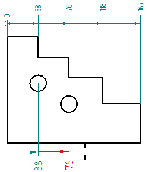
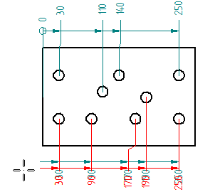

Coordinate dimension alignment sets
Coordinate dimensions that refer to a common origin and are aligned in the same direction share membership in an alignment set. Members of one alignment set can be oriented differently and manipulated independently of another alignment set.
The two dimensions at the bottom of the drawing view were created as members of a new alignment set.

Creating coordinate dimension alignment sets
You can create a new coordinate dimension alignment set to change the orientation of the next dimension placed. Use Alt+click as you select the next element to measure. This starts a new alignment set. Every new dimension is added to this set. Do not use Alt+click again unless you want to start another alignment set.
You also can add coordinate dimensions to an existing alignment set. The existing dimensions adjust their spacing to accommodate the new ones. When prompted to select a common origin, select any measurement dimension in the alignment set that you want to add to.
Manipulating coordinate dimension alignment sets
You can manipulate all coordinate dimensions in an alignment set. For example, you can:
-
Adjust the position of all of the members of an alignment set at once by dragging any one of the dimension lines.

If the dimension style does not allow a dimension line, you can use the projection line handle point to move all of the dimensions at once. For more information, see Coordinate dimension handles.
-
Adjust the position of a jogged projection line by dragging its handle. This also adjusts the position of adjacent dimensions. This capability applies to jogs created automatically by the Enable automatic jogging option.
-
Combine coordinate dimensions in different alignment sets into one alignment set by dragging one dimension onto another alignment set.
-
Use the following commands to manage the membership of coordinate dimensions in an alignment set:
Use this command
To
Home tab→Dimension group→Remove from Alignment Set
Form a new alignment set of selected dimensions by removing them from the constraints of their current alignment set.
For more information, see Place coordinate dimensions between drawing views.
Split Alignment Set, located on the shortcut menu
Remove a single dimension from its current alignment set for independent manipulation. The dimensions on either side become members of two new alignment sets.
Break Alignment Set, located on the shortcut menu
Dissolve all alignment sets in which the selected dimensions are members.
How do I
Place coordinate dimensions automaticallyPlace a coordinate dimension
Place a coordinate dimension using a coordinate system
Place an angular coordinate dimension
Place coordinate dimensions between drawing views
Change the origin dimension in a coordinate dimension group
Change the coordinate origin value
Learn more
Ordinate dimensionsAdding and removing jogs on coordinate dimensions
Look up more details
Dimension command barCoordinate dimension handles
Automatic Coordinate Dimension command
Automatic Coordinate Dimension command bar
Keypoint Options dialog box
Coordinate Dimension command
Angular Coordinate Dimension command
Change Coordinate Origin command
Lines and Coordinate tab (Dimension Style and Dimension Properties)